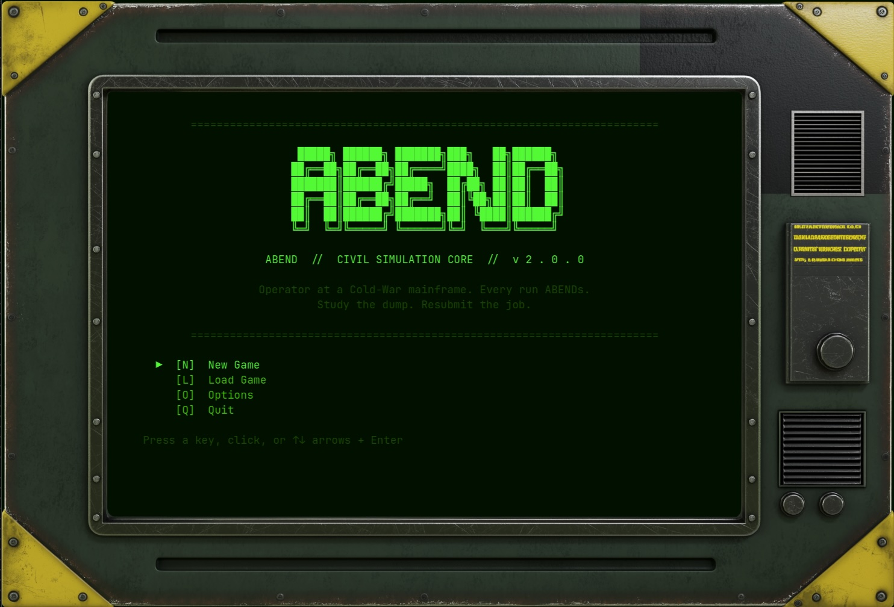
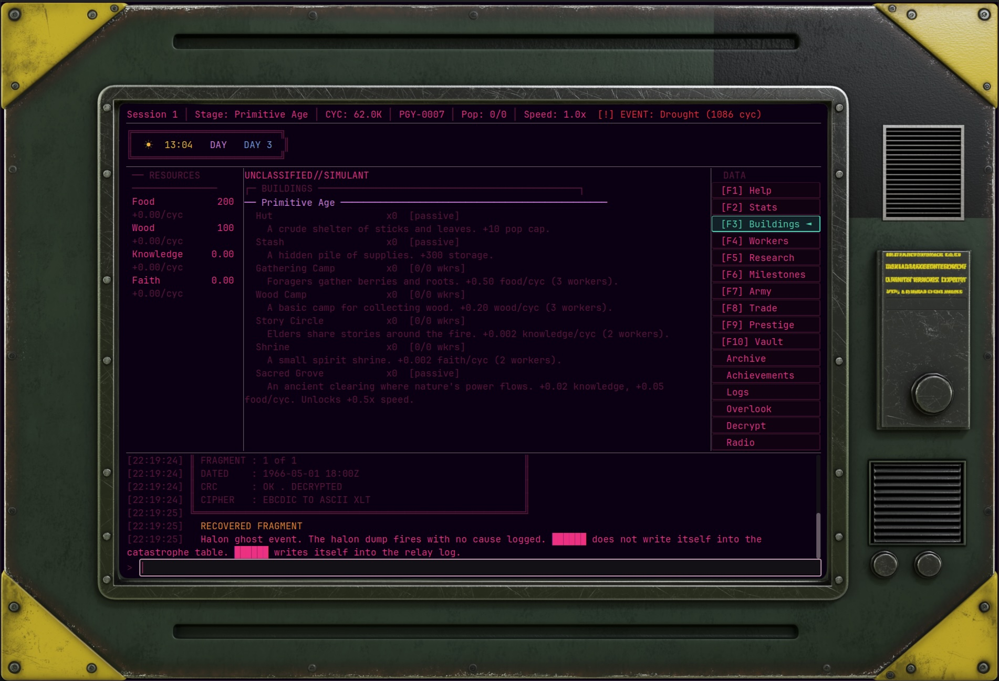

Command-Line Civilization Simulation idler
Type commands. Run the simulations. Build empires. 22 ages from the primitive to the stars.
ABEND is a civilization simulation where the interface is the fiction. You are an Operator running a purpose-built machine in a decommissioned Cold War bunker. The terminal is not a style choice -- it is what remains after the machine allocated every spare processing cycle to the simulation engine. You type commands. The civilization obeys.
Built in Godot 4 with a full CRT shader aesthetic: phosphor glow, scanlines, monochrome display, and mechanical keyboard input. Every age advancement plays a cinematic -- ASCII art, scrolling flavor text, audio crossfade.
Deep mechanics, nothing dumbed down. The command-line civilization builder niche is empty. ABEND owns it.


Ages
Epochs
Buildings
Technologies
Milestones
Worker Tiers
Building Sprites
Random Events
288 buildings across 22 ages including unique Wonders that grant permanent civilization bonuses and unlock age transitions.
70 technologies with prerequisite chains that multiply production, unlock new mechanics, and open paths through the epoch system.
Command soldiers. Launch expeditions with escalating risk and reward. Defend trade routes. Conquer ruins. The army is a resource, not a minigame.
Six NPC factions, multiple trade routes per faction. Diplomatic standing shifts with your choices and directly affects exchange rates.
Sacrifice your civilization for permanent meta-progression. Prestige bonuses carry across all future runs. The long game has a long game.
Every epoch boundary triggers a catastrophe. Endure, succumb, or defer. Each choice reshapes the civilization's trajectory and legacy score.
The entire game renders inside a terminal-style layout. The status bar tracks the critical numbers. The main panel switches between Buildings, Research, Army, Trade, Workers, Map, and more. The log at the bottom is the terminal -- the Operator types here, the machine responds here. Everything else is context.
+----------------------------------------------------------------------+ | STATUS BAR -- Age . Ticks . Resources . Pop . Morale . Speed | +----------------+--------------------------------+--------------------+ | | | | | RESOURCES | MAIN PANEL (switchable) | NAV | | | | | | Food 620 | Buildings / Research / | Milestones | | Wood 875 | Army / Trade / Stats / | Research | | Stone 43 | Workers / Wonders / | Army | | ... | Logs / Epoch / History / | Trade | | | Map | Stats | | [queue] | | Workers | | | | ... | | | | Map | +----------------+--------------------------------+--------------------+ | LOG -- scrollback output | | > _ command input | +----------------------------------------------------------------------+
Primitive, Stone, and Bronze Ages. Humanity's first steps. Wood, stone, and fire.
Iron, Classical, and Medieval Ages. Empires of iron and faith rise and fall.
Renaissance, Colonial, and Industrial Ages. Steam, steel, and global ambition.
Victorian, Electric, and Atomic Ages. Electricity and the atom reshape civilization.
Modern, Information, and Digital Ages. Data flows become the rivers of power.
Cyberpunk, Fusion, and Space Ages. Augmented reality and the conquest of the solar system.
Interstellar, Galactic, Quantum, and Transcendent Ages. Between stars and beyond time itself.
Godot 4 engine, CRT shader, real audio, and the full depth of the civilization simulation. Terminal soul -- real game engine underneath.
MIT license, no royalties, excellent 2D pipeline. The right call.
Strongly typed, struct-friendly. Every mechanic ports cleanly from the original simulation engine.
Phosphor glow, scanlines, ambient flicker. In-world the display is 30 years old and running because nothing better exists for this purpose.
288 buildings, 70 techs, 74 milestones -- all defined in JSON. The simulation engine reads config, not hardcode.
ABEND is actively in development. Check back here as milestones ship.